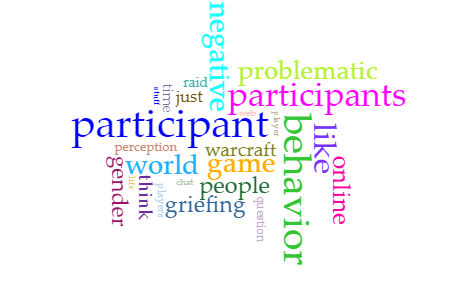
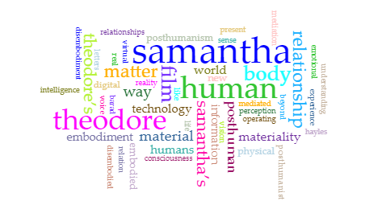
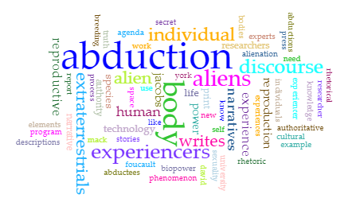
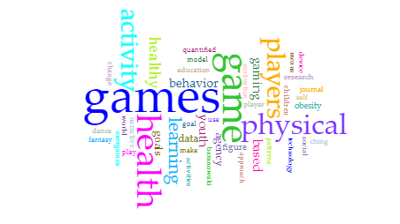
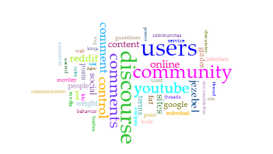

Volume 8
When Trash-talk becomes Abuse: Examining Problematic Speech and Behavior in World of
Warcraft
Joshua Jackson, North Carolina State University
Read full article at Technoculture

Volume 7
“You Feel Real to Me, Samantha”: The Matter of Technology in Spike Jonze’s Her
Paula Murphy, Dublin City University
Read full article at Technoculture

Volume 6
Biopower in Space: Technology, Reproduction, and the Alien Agenda
Stephanie Kelley-Romano, Bates College
Read full article at Technoculture

Volume 5
Gaming Health: A Goals-Means-Agency Framework for Evaluating and Designing Physical Activity Games
Cynthia Carter Ching, University of California Davis
Roxanne Rashedi, University of California Davis
and Sara Elizabeth Schaefer, University of California Davis
Read full article at Technoculture

Volume 4
Community Guides: Disrupting Oppression in Comment Threads on Social Sites
Stephanie Vie, University of Central Florida
Deb Balzhiser, Texas State University
Devon Fitzgerald Ralston, Miami University
Read full article at Technoculture
